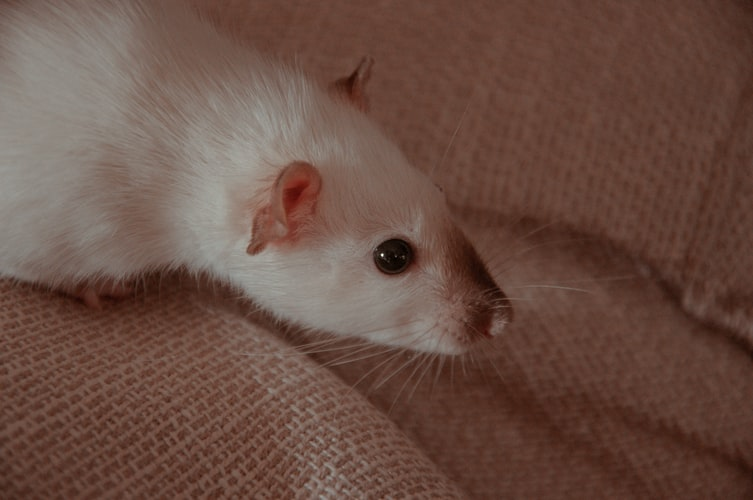

The Fat Rat으로 알려진 Christian Friedrich Johannes Büttner (1979년 6월 1일 출생) 는 독일 DJ, 레코드 프로듀서 및 음악가입니다. 그의 장르는 종종 " glitch-hop " 으로 묘사됩니다 . 그는 YouTube 에서 1억 9천만 회 이상의 조회수를 기록한 2014년 노래 "Unity" 와 빌보드 댄스/일렉트로닉 앨범 차트 에서 23위를 기록한 2016년 연장 플레이 "Jackpot" 으로 가장 잘 알려져 있습니다 . 그는 2015년 2월 Billboard의 Next Big Sound 차트에서 15위를 기록했습니다.
Büttner는 2001년 자신의 실명으로 음악을 제작하기 시작했습니다. 그는 텔레비전, 라디오 및 광고용 배경 음악을 제작하고 DJ를위한 음악을 제작했습니다.
2010 년에 Büttner는 René la Taupe를 위해 Mignon Mignon 노래를 제작했으며 , 이는 프랑스에서 1위를 차지했습니다. 그 무렵 그는 Lupe Fiasco 의 앨범 Food & Liquor II : The Great American Rap Album Pt. 에서 "Audubon Ballroom"이라는 노래를 제작하기도했습니다 . 1 , Billboard 200 에서 #5 차트로 기록되었습니다 .
2011년 7월, 그는 젊었을 때 그에게 주어진 별명 인 TheFatRat이라는 가명으로 솔로 음악을 만들기 시작했습니다. 그의 경력은 그의 첫 번째 EP인 Do Be Do Be Do 의 출시로 시작되었습니다 .